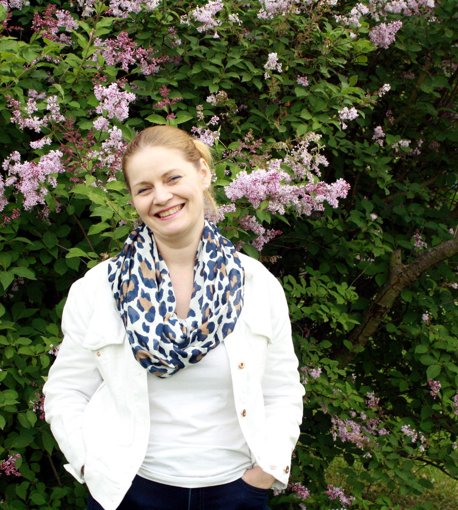
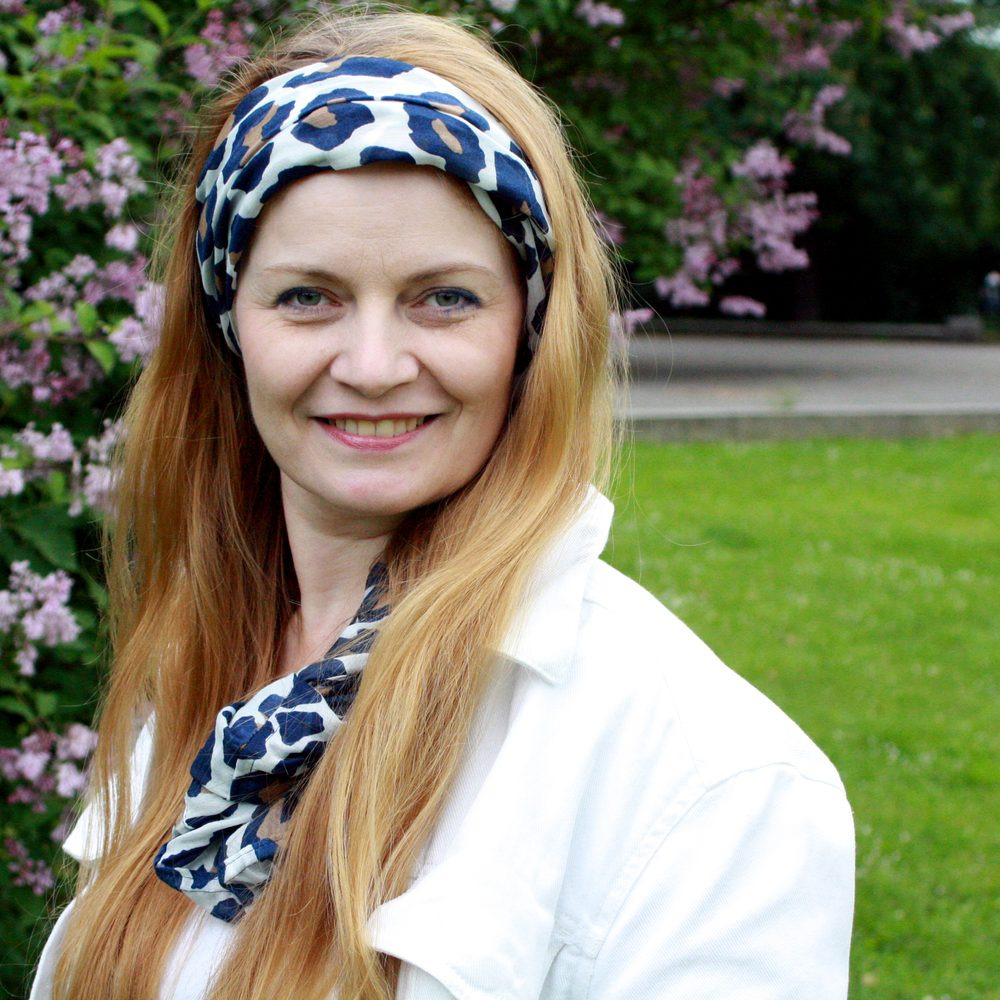

Posledních pár let vedu lidi k pochopení toho, kdo skutečně jsou — prostřednictvím hlubokého naslouchání a principů metody 3P (Psychology of Mind).

Roky jsem hledala techniky, systémy a postupy, jak žít líp. Přečetla jsem spoustu knih, vyzkoušela spoustu metod. Vždycky to fungovalo jen chvíli, nebo jen na některé věci. Něco ve mně ale jako by vědělo, že musí existovat jednodušší cesta. Tak jsem pokračovala v hledání a testování na vlastním životě.
A pak jsem se jednoho dne potkala s hlubokým nasloucháním. Když jsem zažila, jaké to je, když mi někdo skutečně naslouchá, zjistila jsem, že to, co jsem celý život hledala, byl pocit, že jsem slyšená. Nepotřebovala jsem opravit. Nepotřebovala jsem radu, jak žít vlastní život. Chtěla jsem se cítit přijímaná taková, jaká jsem.
Postupně mi došlo, že ke stejnému pocitu se dá dostat i naopak — tím, že budu naslouchat já. Bez rad. Bez snahy něco opravit. Jen se zvědavostí a plnou pozorností v přítomném okamžiku. A přesně tohle dnes učím lidi, se kterými pracuji: jak se skrze naslouchání — sobě i druhým — vrátit ke klidu, jasnosti a vlastní vnitřní moudrosti.
S kamarádkou jsme před pěti lety založily projekt Česko naslouchá, na kterém mi velmi záleží. Na veřejných workshopech za dobrovolné vstupné necháváme lidi zažít rozdíl mezi hlubokým, přirozeným nasloucháním — takovým, jakým naslouchají malé děti — a běžným nasloucháním, které známe z každodenního života. Workshopy probíhají v různých městech po celé České republice, aktuální termíny najdeš na www.ceskonasloucha.cz — mrkni tam, jestli se něco neděje blízko tebe.
Tři principy, ze kterých vychází všechno, co dělám.
Nejde jen o fyzickou přítomnost. Jde o to, kam mířím pozornost — ne na vlastní myšlenky, vzpomínky nebo komentáře, ale na tebe a na to, co říkáš.
Každý rozumí slovům trochu jinak — podle výchovy, zkušeností, nálady. Když naslouchám bez svých filtrů a bez hodnocení, slyším líp, o co skutečně jde.
Díky tomu, že jsem v plné přítomnosti a naslouchám hluboce, vnímám, na co se tě mám zeptat a co říct.

Nejlépe si rozumíme, pokud:
Nejsem tu od toho, abych ti řekla, jak máš žít. Jsem tu proto, abys sám/sama zjistil/a, že to nejlíp víš ty.
„První setkání s Kájou bylo jako probuzení se z šedého snu do krásného, světlého a barevného dne plného možností. S Kájou se vždy cítím jako s velmi dobrým přítelem.“
— Terka Hladíková
„Postupně jsem si opravdu začala všímat věcí okolo sebe a uvědomovat si samu sebe. Přestala jsem se zabývat tím, co si o mně lidé pomyslí. Nejdůležitější je, že jsem si začala vážit sama sebe.“
— Šárka Větrovská
„Nemusela jsem dělat se sebou nic. Bylo mi vysvětleno, jak to všechno funguje. Přišla obrovská úleva, jako kdyby ze mě spadl velký balvan.“
— Karla Lavická
„Úloha kouče v tomto případě je vás poslouchat, zachytit místa, ve kterých máte trhliny, a přivést vás k tomu, abyste v nich našli své nejlepší možnosti řešení.“
— Bára Lebedová
Nejsi si jistý/á, co přesně hledáš, nebo se chceš jen zeptat? Napiš mi.
E-mail: kajakofra@gmail.com
Telefon: +420 604 182 941